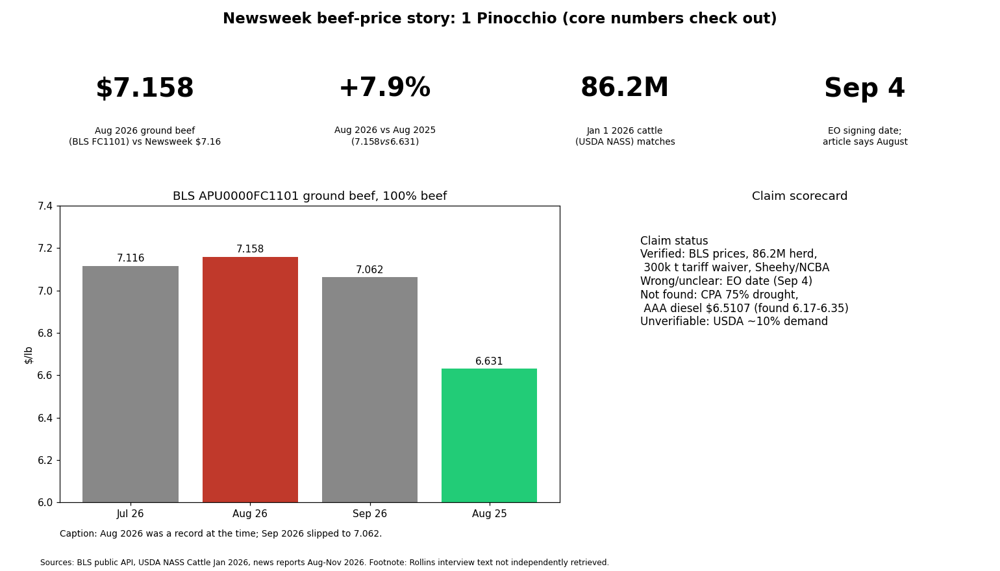

Mostly accurate: 1 Pinocchio for Newsweek's Rollins beef story

Summary of findings
The article's price figures check out exactly against BLS, with one date error and several unconfirmed attributions: 1 Pinocchio. Newsweek's $7.16 (Aug 2026), $7.116 (Jul) and $6.631 (Aug 2025) match BLS series APU0000FC1101 (7.158, 7.116, 6.631), a +7.9% yearly rise. August was a record then; September fell to 7.062.
- Herd 86.2M head on Jan 1 2026 matches USDA NASS (beef cows 27.6M).
- Tariff waiver on up to 300,000 metric tons for 90 days (announced Aug 21 2026), with NCBA and Sen. Sheehy opposed: confirmed by multiple outlets.
- Executive orders: the wolf and packer orders were signed Sept 4 2026 per USDA and trade press; the article (as retrieved) says August. Likely error; the fetched summary may be imperfect.
- AAA diesel $6.5107: not found; early Nov reports show $6.17-$6.35 (peak 6.352). Could be a different date.
- Not found: CPA report attribution and "75% of beef cow herd in drought" (another analysis said 48% of cattle). USDA "demand up almost 10%": not checkable here.
- Context: other BLS ground-beef series (703112) show Aug 6.923; Rollins' claim beef prices are down 5% was not verified. The "Americans good with it" framing rests on her remark about $6.50 beef.
Limits: the article was read through a summarizing fetch tool, not verbatim; the Rollins interview itself was not retrieved. Conclusions could change if the EO date in the original is Sept.
Steps
Answer as above. Confidence: high on BLS and herd, medium on dates, low on diesel/drought.
Sources
- https://api.bls.gov/publicAPI/v1/timeseries/data/ (APU0000FC1101, 703111-3)
- https://esmis.nal.usda.gov/sites/default/release-files/795748/catl0126.txt
- https://www.aljazeera.com/news/2026/8/21/trump-waives-out-of-quota-beef-tariffs-for-90-days-to-lower-prices
- https://www.goodmorningamerica.com/news/story/trump-announces-temporary-pause-beef-import-tariffs-effort-135841581
- https://www.usda.gov press release 2026/09/04 executive orders
- https://www.newsweek.com/rollins-americans-good-with-surging-beef-prices-12468996
- https://stockanalysis.com/news/october-gas-diesel-prices-record/